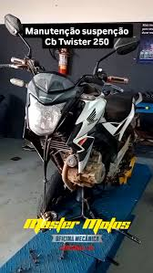

moto enocomica?
Honda CB Twister 250 é considerada econômica para sua categoria (250cc), com médias de consumo que costumam ficar entre 25 km/l e 35 km/l, dependendo da condução e das condições de trânsito>

uma street naked de 249,5 cc, destacando-se pelo motor flex de até 22,6 cv, câmbio de 6 marchas, painel digital blackout e boa agilidade urbana
Honda CB Twister 250 é considerada econômica para sua categoria (250cc), com médias de consumo que costumam ficar entre 25 km/l e 35 km/l, dependendo da condução e das condições de trânsito>
Os defeitos crônicos mais citados na Honda Twister 250 incluem barulhos no cabeçote (desgaste da arruela do comando), problemas no motor de partida, câmbio duro para achar o neutro e ruídos na relação (corrente),
